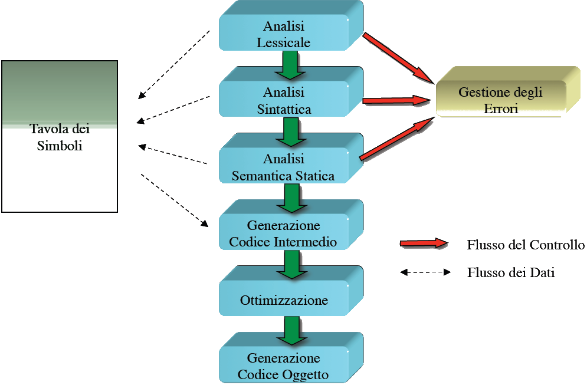

traduttori traducono testo scritto in un linguaggio di programmazione in codice eseguibile sulla macchina
due tipi:
un interprete traduce ed esegue istruzione per istruzione un programma, mentre un compilatore crea prima un blocco di codice eseguibile che dovrà essere consumato da un altro modulo posto a valle del processo di traduzione (l’esecutore,appunto).

Tavola dei simboli:è un repository di informazioni necessarie ai diversi moduli per il processo di traduzione. Viene
rappresentata come una matrice: a ogni riga corrisponde un token; le colonne invece rappresentano le caratteristiche dei varî token:
- – L’analizzatore lessicale (lo scanner), quando produce un
- token, inserisce una riga nella tavola e inizializza la co-
- lonna ID all’identificatore del token;
- – L’analizzatore sintattico (il parser LL o LR) dai token for-
- ma gli statement, inserendo nella tavola i riferimenti per
- la costruzione del parse tree;
- – L’analizzatore semantico statico, a partire dalla tradu-
- zione fatta dal parser secondo una CFG, produrrà nuove
- righe verificando le regole contestuali.
Il Generatore di codice intermedio produce, coi dati della tabella dei simboli, un codice intermedio a partire dal codice
sorgente del programma. Il generatore però agisce secondo un punto di vista locale,codificando il sorgente istruzione per istruzione senza tener conto del punto di vista globale.
L’ottimizzatore, che fornisce spunti di ottimizzazione dell codice intermedio, per esempio eliminando le ridondanze;
Il generatore di codice oggetto applica le operazioni di ottimizzazione suggerite.
I varî analizzatori del processo non lavorano sequenzialmente, ma in un contesto di concorrenza
Solo i primi tre moduli possono generare condizioni d’errore.
Il processo di interpretazione:

- Il processo di interpretazione è praticamente equivalente al ciclo Fetch/Decode/Execute di una CPU;
- Nella fase di decodifica sono incluse l’analisi sintattica, quella lessicale e quella semantica statica;
- La selezione del codice avviene a partire dall’istruzione decodificata, grazie a delle “librerie” di codice sorgente.
Compilatori VS Interpreti:
- La velocità di esecuzione
- La facilità del debugging
- L’efficienza d’uso della memoria del programma eseguito
- Portabilità del programma interpretato
SCHEMI DI TRADUZIONE:
- Interprete con preprocessore; il pre-procesore per esempio elimina commenti

- Compilatore Classico; linker per esempio printf in c

- Compilatore con uotput in assembler:

- variante con preprocessore(Si inserisce un preprocessore a monte del compilatore nello
- schema di 2.2.4. In questo modo, si aggiungono nuove funziona-
- lità al programma compilato, che si adatta alla macchina su cui
- gira (per esempio le direttive di compilazione, che modificano il
- sorgente in base a certe condizioni, come il valore di una variabile
- globale di quella particolare macchina).)

- Compilatore in un linguaggio intermedio:

- Compilatore just in time ( si usa nella programmazione a oggetti, libreria dinamica con i metodi compilati delle classi)

- Compilatore per linguaggi interpretati:

È stato pensato per compilare un programma scritto in un lin-
guaggio che può essere solamente interpretato. Il compilatore
cerca di tradurre il più possibile del codice sorgente che gli vie-
ne fornito, ma alcune istruzioni che devono essere tradotte a run
time le ignorerà (per questo si parla di un compilatore parziale).
Sarà l’esecutore che dovrà verificare la presenza di queste istru-
zioni non tradotte: se le troverà, richiamerà l’interprete, che le
tradurrà e poi le fornirà all’esecutore per completare la traduzio-
ne e quindi l’esecuzione. Sono complessi da implementare, ma
cercano di avere i vantaggi di entrambi i tipi di traduttori.